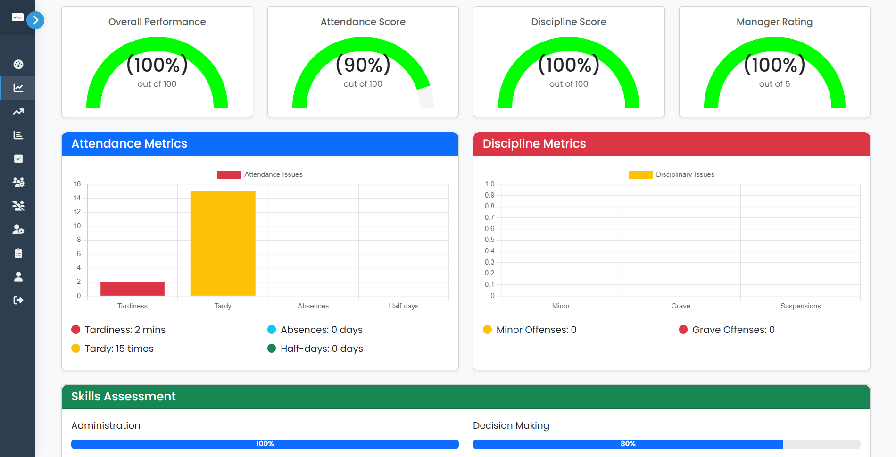

Performance Metrics: Displays individual employee performance indicators including overall score, attendance, discipline, manager rating, and skills assessment with visual charts.
i-PROMOTE (Intelligent Predictive Resource Optimization and Management for Organizational Talent Enhancement) is a data-driven HR decision support system that uses XGBoost and SHAP to analyze employee performance and predict promotion readiness. This page is a placeholder for visual case study content.
Performance Metrics: Displays individual employee performance indicators including overall score, attendance, discipline, manager rating, and skills assessment with visual charts.
Promotion Analysis: Shows AI-powered promotion predictions with employee scores and promotion probabilities to support data-driven HR decisions.
Promotion Factor Analysis: A dashboard popup showing Promotion Factors Analysis with a SHAP bar chart highlighting the key performance and behavior factors influencing an employee’s promotion decision.